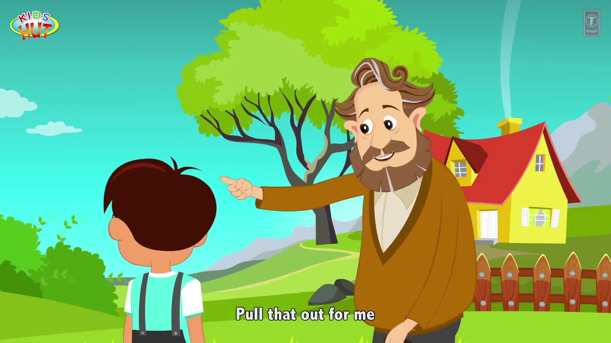

A wealthy businessman was worried about his son’s bad habits.
He sought counsel from a wise, old man. The old man met the man’s son and took him out for a stroll. They walked into the woods, and the old man showed the boy a small sapling and asked him to pull it out. The boy did so with ease, and they walked on.
The old man then asked the boy to pull out a small plant. The boy did that too, with a little effort. As they walked, the old man asked the boy to pull out the bush, which he did.
The next was a small tree, which the child had to struggle a lot to pull out.
Finally, the old man showed him a bigger tree and asked the child to pull it out.
The child failed to pull it out even after trying several times, in different ways. The old man looks at the boy, smiles and says, “So is the case with habits, good or bad”.